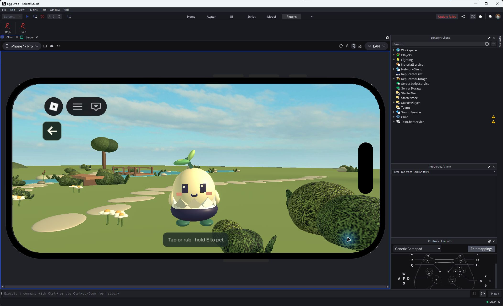
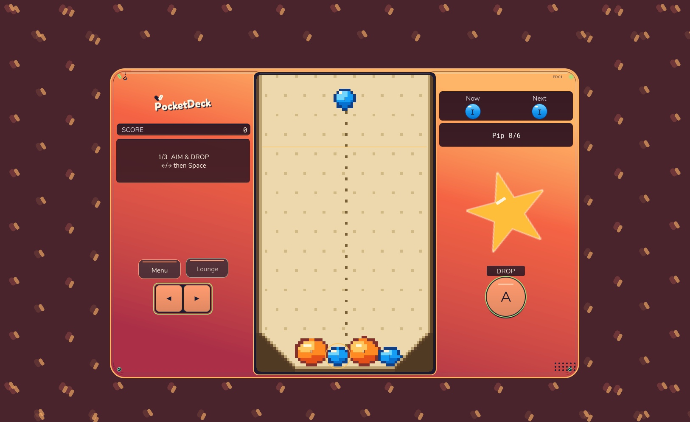
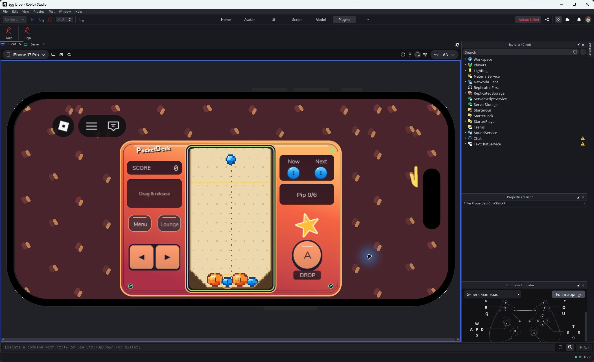
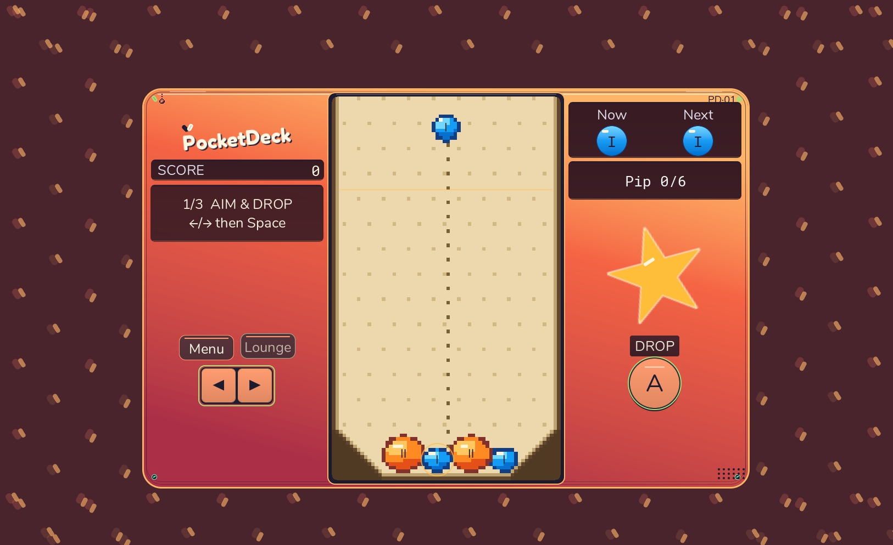
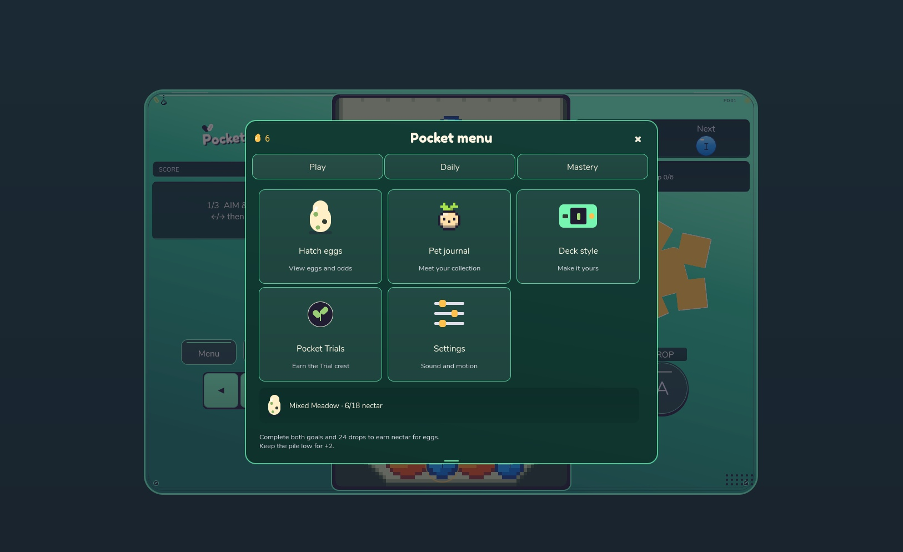
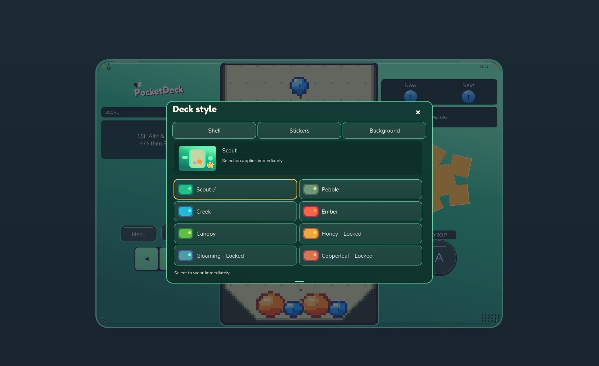
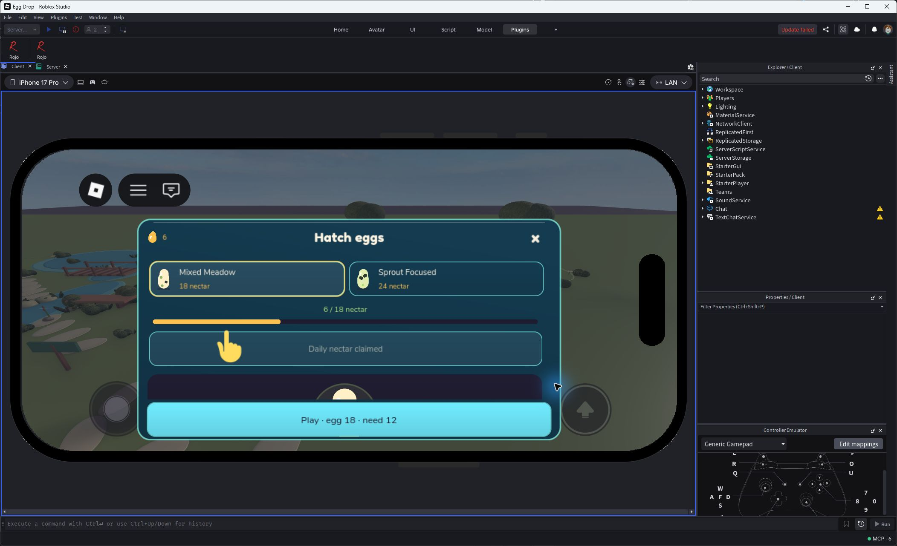
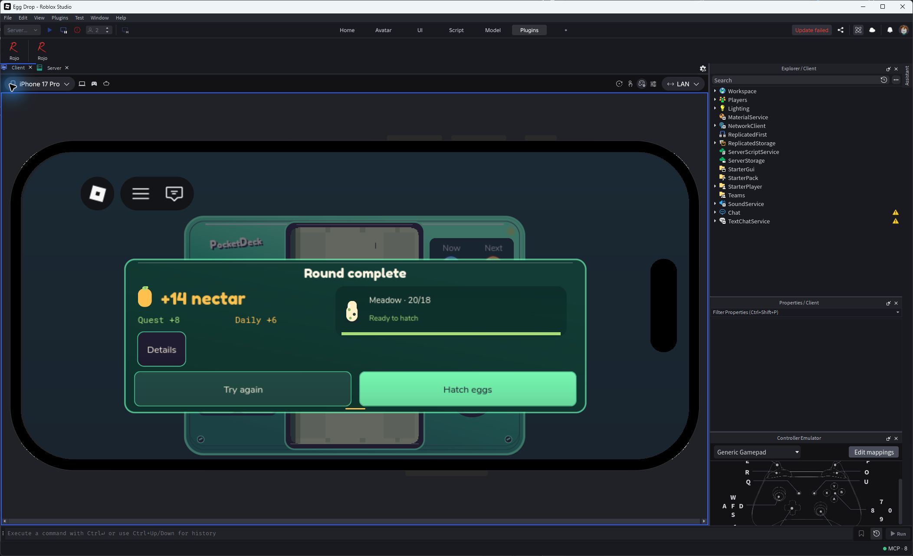
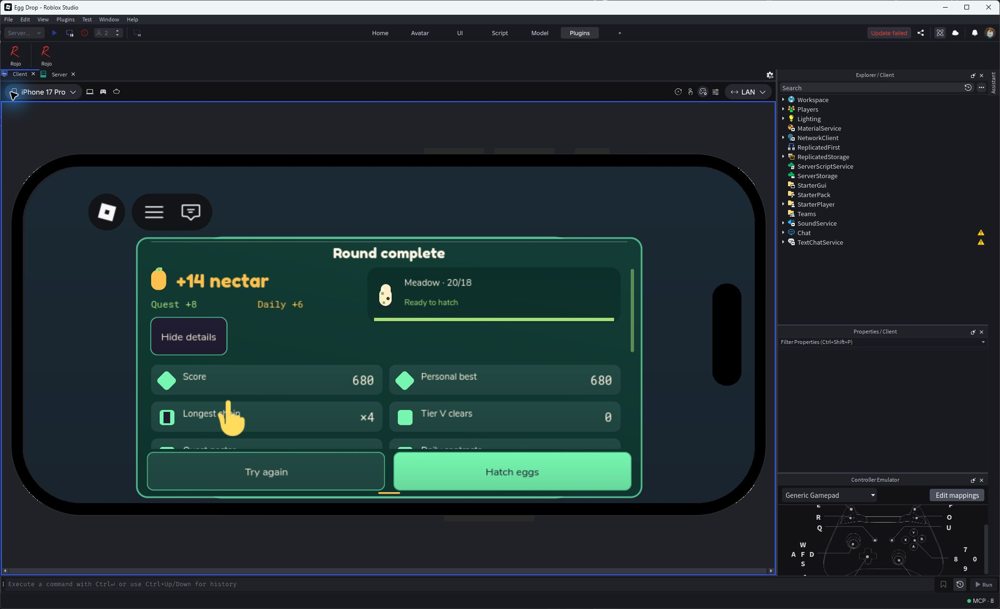
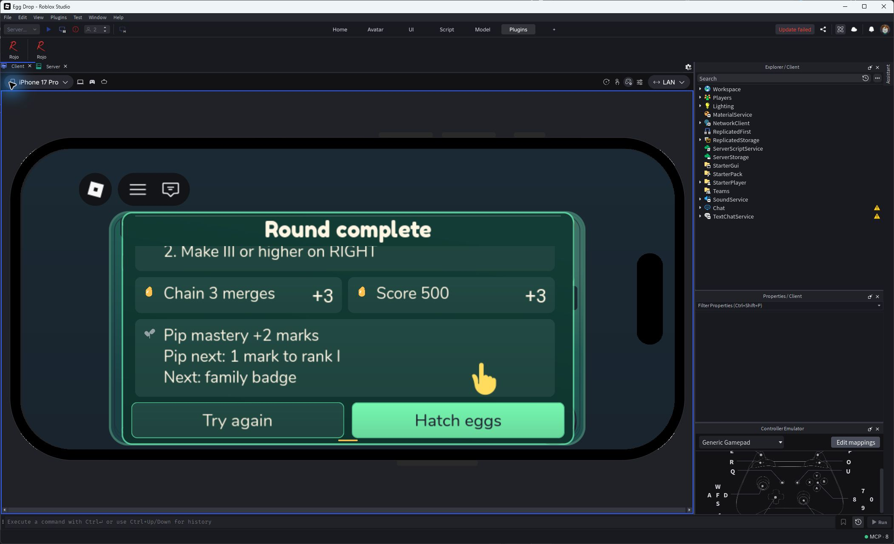

Historical vivid UI checkpoint. Old companion visuals and publication status below are historical. See the current garden gallery and PLAY-BUILD.md.

Accepted companion pass, phone emulation: closer complete silhouette, translucent badge and graphical Back. Actual rub and saved nectar evidence is in BUILD-EVIDENCE.md.

Accepted handheld pass. Roomier case, vivid fixed-light jellies, smooth tilted Star print and smaller repeating backdrop artwork. Actual desktop rendering; selected Ember finish.

Actual controls selected Ember and Star. Studio phone emulation at Medium text; functional controls keep their touch targets.

Native Largest text preference on the reviewed handheld freeze. Final integrated accessibility pass remains pending.

Roomier destinations and shared typography. Daily gift and remaining reward screens are still being revised.

Confirmed finishes and smooth print previews. Locked preview does not change equipped appearance.

Actual controls after starter hatch. Choice header and first row remain visible; the reveal stage redesign is still pending.

Actual 24-drop Bank round on the final recap runtime: +14 saved nectar, wallet20/18 for Meadow. Solver-assisted pointer controls in Studio phone emulation.

Compact paired metrics, one scrolling body and pinned actions. Native Medium preference.

Actual scroll to the complete final family card; both actions remain reachable. Phone emulation at native Largest text.